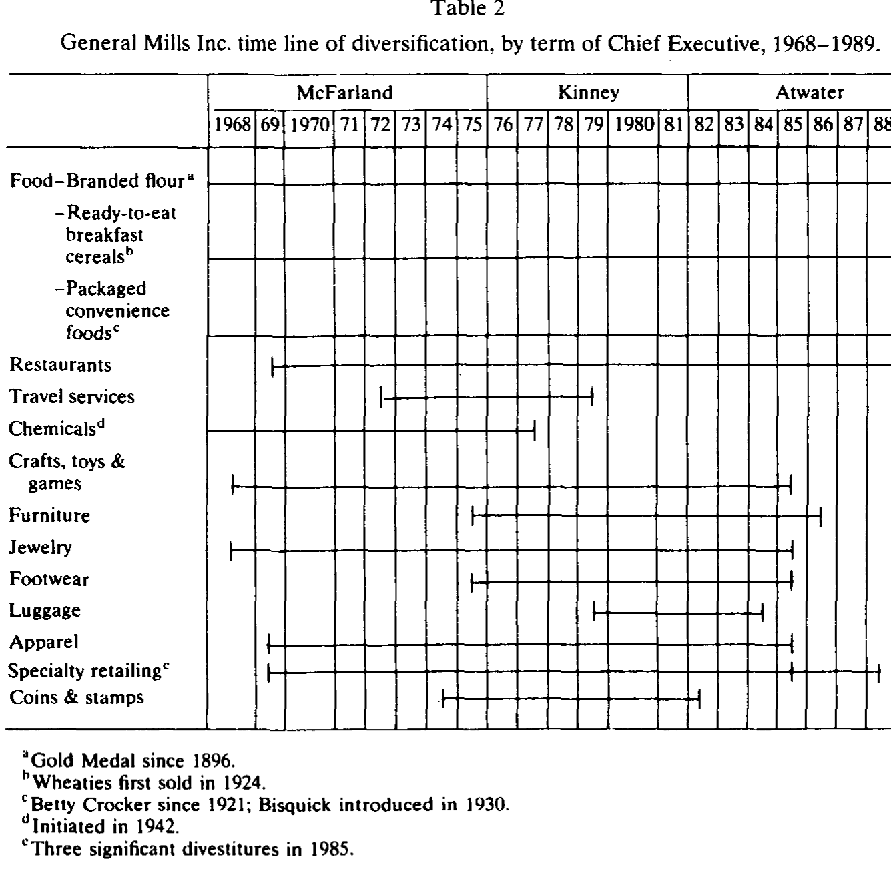
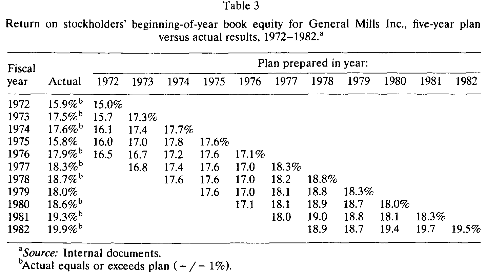
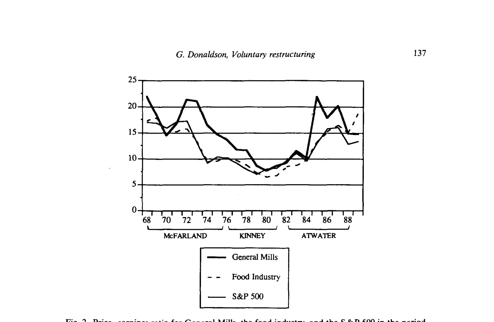
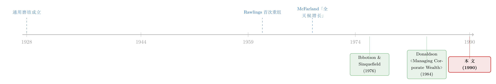

没有野蛮人敲门，一家公司也能自己拆掉自己
本文读的是 Donaldson (1990, Journal of Financial Economics)：通过对通用磨坊（General Mills）长达数十年的田野追踪，作者给 1980 年代「只有恶意收购才能逼经理变得有效率」这一流行观点，提供了一个反例——这家公司在没有外部控制权威胁的情况下，依靠内部治理的累积压力，主动地一次次拆掉并重塑了自己。
1 一个不合时宜的故事
1980 年代是「门口的野蛮人」的年代。杠杆收购、恶意要约、代理权之争层出不穷，学界与媒体逐渐凝结出一个近乎共识的判断：公众公司没有能力自己面对自己的低效，唯有真实的或被威胁的控制权争夺（hostile control contest），才能逼着经理人重新变得有效率。
这是一个有力的叙事。它的潜台词是：公司治理的内部齿轮——董事会、管理层、内部考核——基本上是失灵的；真正的纪律来自市场，来自外部，来自那个随时可能把你买下来、再把你换掉的人。
Donaldson 这篇文章，偏偏要讲一个不合时宜的故事。他说：让我给你看一个反例（counterexample）。一家叫通用磨坊的公司，1928 年作为全美面粉厂的整合者诞生，二战后一头扎进一堆毫不相干的产业，又在 1980 年代末把自己重新收拢回包装食品和餐饮——而这一切，主要是它自己做的，没有谁拿着收购要约逼在它脖子上。
这里要先说清楚一对概念。「主动重组（voluntary restructuring）」指的是公司在没有外部控制权威胁下，由内部治理流程自发触发的结构调整；「被动重组（involuntary restructuring）」则是被收购方、敌意要约、代理权之争等外部压力逼出来的。作者全文都在追问：前者真的可能吗？如果可能，它和后者有什么不同？
2 方法：一台没有对照组的「显微镜」
先得诚实地交代清楚这篇文章是怎么做的，因为它和今天我们熟悉的实证范式很不一样。
这不是一篇跑回归的论文。它没有 双重差分 (difference-in-differences, DiD)，没有 工具变量 (instrumental variable, IV)，没有 t 值、没有标准误聚类。它是一份临床式案例史 (clinical case history)：作者从 1970 年代就开始接触通用磨坊（当时是一项关于公司财务目标的研究），此后又在一项关于 1980 年代美国公司主动/被动重组的田野研究中重新建立联系。证据来自公开的公司年报、商业媒体、分析师报告、部分内部文件，以及最关键的——对现任与历任管理层、部分董事的大量深度访谈。
这种方法的长处与短处都很明显。长处是它能钻进决策的「黑箱」，看见财务报表上永远看不到的东西：经理人当时在想什么、内部压力是怎么一点点累积的、为什么是这一年而不是那一年动手。短处也同样直白：这是一个 N = 1 的样本，没有反事实，没有对照组，作者自己也坦承「所有解读必然是我个人的」。
所以读这篇文章，要带着一种特定的期待：它给你的不是「平均处理效应」，而是一个机制的特写。它想回答的不是「主动重组平均能提升多少股东价值」，而是「内部治理这台机器，到底是怎样、在什么条件下，发出『改变方向』这道命令的」。
3 三十年一个轮回
要理解这台机器，得先把通用磨坊的故事铺开。作者有一句话点透了整件事的节奏：
「往往要花十年陷进麻烦，再花十年爬出来。」
首先，是发家与迷失。1928 年，James Ford Bell 把七家区域面粉厂合并成「世界上最大的面粉厂」，独特之处是建起了一张全国性的营销与分销网络。但接下来二十年很难熬——大萧条、二战，1941 年的销售额 $127 million，只比 1929 年多了三百万美元。战后，创始人之子 Charles Bell 把战时被迫搞起的「不相关多元化」延续下来，公司一头扎进小家电、军用电子、化学品，甚至——「如果你信的话」——双人微型潜艇和高空气球。结果是 1961 年《福布斯》把它在食品业里排到了倒数第二。最刺眼的数字是：1948 年每股收益 $0.49，整整十年后的 1958 年，$0.50。
接着，是第一次主动重组。Charles Bell 做了一件不寻常的事：他去公司外面找自己的接班人，请来了四星上将、他二战时的指挥官 Edwin Rawlings。Rawlings 看清了战后的竞争事实——面粉人均消费在下降、便利食品需求在飙升——于是动了三刀：剥离不相关或不赚钱的业务（电子、配方饲料、油籽）；关掉 17 家面粉厂中的 9 家，一举砍掉一半的大宗低毛利收入，代价是放弃 $200 million 销售额、最终裁员 29%；最重要的第三刀，是把增长重心明确押注在品牌化、专有的消费食品上。八年后，消费食品占公司销售的比重从 45% 升到 80%，每股收益翻倍。
注意，这第一次重组本身就是个反例的雏形：没有外部威胁，是一位被「请进来」的局外人，看清了环境的变化，主动动的刀。
4 「全天候增长公司」：一个治理的陷阱是怎样长出来的
然后，真正埋下 1980 年代那场大重组伏笔的，是 1968 年接任的 James McFarland。
这是全文的枢纽，值得慢慢看。McFarland 是个「彻头彻尾的食品人」，27 年前从一个粮食会计做起。当时股市把食品业当成成熟行业，给的市盈率很低。McFarland 的算盘是：通过进一步多元化和更快的整体增长，来抬高通用磨坊的增长潜力和估值倍数，同时让食品业务保持主导以稳定盈利。他给这套战略起了个名字——「全天候增长公司（the all-weather growth company）」，既要增长，又要稳定。
问题出在钱从哪来。Rawlings 留下的消费食品业务太能产生现金了，多到「远超食品业内部可投资的机会」。换作别人，可能会把多余的钱以更高股利还给股东。但 McFarland 选择了另一条路：用一圈「相关」业务把核心业务包裹起来（a cocoon of 'related' business segments），玩具、游戏、服装、特色零售、旅行服务、稀有钱币邮票……这套打法「即便不是有意，看上去也提供了一个内部资本市场（internal capital market）」，让核心业务可以在里面自我演化。
如表 2 所示，这种围绕历任 CEO 展开的多元化扩张，在 McFarland 任内达到顶点，几乎全部由内部产品市场的现金流自给自足，再配上极度保守的负债政策——「自给自足的增长，是这家公司的游戏名字」。

Table 2
这里就是真正关键的一步。 这套战略在内部考核的指标上，看起来漂亮极了。McFarland 时代（1968–1975），销售额年复合增长 14%，净利润年复合增长 13.5%，账面权益回报率（return on book equity）持续跑赢同行和 S&P 500。股价在 1970 到 1972 年间从 $24 涨到 $60。一切都在确认这条路走对了。
可是，反转藏在另一组数字里。在「最大潜力」这把绝对的尺子下，警报已经响了：销售回报率从 Rawlings 时代靠产品结构改善一路攀升，到 McFarland 手里却从 4.7% 跌到 3.3%；存货周转率从 8.6 倍骤降到 4.4 倍；那些新收购来的业务回报很低。流动性比率在上升，债务权益比在下降——表面是稳健，实质是越来越大比例的资源，被从积极的产品市场投资里抽出来，去换取「企业的强壮、连续性和防御能力」。
「全天候增长」和企业自给自足，是有价格的。这个价格，先被股市嗅到了。
（关于「内部资本市场究竟是肥水不流外人田，还是悄悄把好钱配到了坏项目」这条争论，可参见《钱往哪个分部流，才算「肥水没流外人田」？》与《多元化到底毁不毁价值？》。）
5 市场先开口：一条慢慢闭合的估值缺口
接任 McFarland 的是 E. Robert Kinney——一个「巩固期」的 CEO。他放慢收购、收紧控制、对经营层开征营运资本费用（「钱待在哪里被善待，就往哪里去」）。从内部那把尺子看，进步是实打实的。
如表 3 所示，这是通用磨坊滚动五年计划里 股东期初账面权益回报率（ROE）的「计划 vs 实际」。1972 到 1982 年，只有 1975 和 1979 两个孤立的年份没能达到或超过目标。分析师和商业媒体几乎一致认为这是一家管理极其出色的公司，《财富》《华尔街成绩单》都在为它背书。

Table 3
但有一个事实始终令人不安，而它恰恰不来自内部账本，来自市场。
McFarland 早年把市盈率在 1973 年推到过 22 的高点，远超行业和大盘。可从 1973 年起，通用磨坊的市盈率和整个市场一起回落，更糟的是，它与市场之间的那道差距在逐渐闭合。市净率（market-to-book ratio）1973 年还是 3.1，到 1979 年只剩 1.4。
如图 2 所示，通用磨坊、食品业与 S&P 500 的市盈率轨迹，把这条慢慢闭合的缺口画得很清楚。这条缺口，一度可以被解释成「整个市场的现象，单个公司的管理层无能为力」——但它没有消失，而是年复一年地待在那里。

Figure 2: Price-earnings ratio for General Mills, the food industry, and the S&P 500 in the period
这就是全文机制的核心。 作者反复强调的论点是：持续的财务表现侵蚀，会引入它自己的内部纪律（introduces its own internal discipline）。压力和张力会从内部冒出来，挑战既有战略、催生纠错行动——无论外部压力是否存在。但是，因为要让一个庞大的组织重新朝着一个共同的战略目标发力，需要巨大而持续的努力，所以只有当那个信号「明确无误且持续」、是「清晰而当下的危险」时，「改变方向」这道命令才会被发出。
那条慢慢闭合的市盈率缺口，那从 3.1 跌到 1.4 的市净率，就是这样一个不会自我消解、持续逼问的信号。它不是哪个野蛮人敲的门，而是市场用估值，一年一年地，把「全天候增长公司」这套自给自足的逻辑，慢慢否决掉。到 Kinney 的接班人 Bruce Atwater 在 1981 年接棒、并在 1980 年代把公司重新收拢回包装食品与餐饮时，触发改变的那股力量，已经在组织内部积蓄了整整一个「十年」。
（一家公司用结构性的剧变来「逼自己」脱胎换骨，杠杆是另一条常见的路径，可参见《九倍的债，没人逼，他偏要借》；而把业务拆出去同样能重置激励，见《拆掉一家公司，是为了让老板「坐不住」》。）
6 为「主动」翻案
把整个故事拉回到开头那个张力，作者最终落点在四个判断上，而它们共同构成了对「主动重组」的翻案：
第一，正常的公司管理与治理系统，有能力触发根本性的变革——即便在某些时刻控制机制被刻意压制，事件的累积压力依然能催生一个主动而恰当的回应。
第二，无论由外部还是内部压力诱发，重组的焦点与意图在根本上是相同的：提升公司资源的使用效率，以及在相互竞争的利益相关方之间，重新分配企业创造的价值。
第三，被外部压力强制的重组（即「被动」）往往发生得更快，因而对相关各方更具创伤性；但两种重组最终影响的，大体是同一批利益相关方，方式也相似。
第四——也是最有意思的反转——快速、剧烈的被动重组有其内在的经济收益，但也有内在的成本，而这些成本可能被一个更从容的主动过程所缓解。从单个公司、乃至整个经济的角度看，哪一个过程「更好」并不显然。但就通用磨坊而言，有大量历史证据表明，对变革时点拥有更大的自由，同时让投资者和员工都受了益。
这里藏着对 Jensen 式 自由现金流（free cash flow）逻辑的一个微妙补充。Jensen 的故事里，过剩现金是滋生低效投资的温床，需要债务或收购威胁来「逼」公司吐出来。通用磨坊的故事承认了这个机制——McFarland 那圈「业务茧房」正是过剩现金的产物——但它同时提示：内部治理的累积压力，也可能成为吐出现金、收拢战线的另一种力量，而且代价更小。（关于自由现金流这条主线，可参见《现金为什么一定要「还」出去？——四十年后，重读 Jensen 的自由现金流》。）
7 文献脉络
这篇文章的位置，要放回 1980 年代那场关于「公司控制权市场」的大辩论里看。

它的源头其实是作者自己的研究纲领。Donaldson 早在 1984 年的《Managing Corporate Wealth》里，就在追问经理人究竟在为谁、为什么目标管理一家公司的「财富」；而这篇通用磨坊的案例，是他即将出版的《Orderly Restructuring》（关于美国公司对新财务优先级的管理层回应）的一块田野拼图。换句话说，这不是一篇孤立的案例，而是一个更大研究项目的「临床切片」。
与此同时，它是对当时主流——「市场为公司控制权（market for corporate control）是唯一有效的纪律来源」——的一次正面回应。文章致谢里点名感谢的 Michael C. Jensen、Richard S. Ruback、Kenneth R. French，正是这场辩论的核心人物，这本身就标明了它要对话的对手是谁。文中用 Ibbotson and Sinquefield (1976) 给出的 S&P 500 历史回报（1966–1975 年复合年化 3.27%）作为基准，来衡量通用磨坊「跑赢大盘近一倍」的相对表现；又借《财富》(1976) 和美林分析师报告（The Wall Street Transcript, 1981）的赞誉，反衬出「内部指标全部亮绿灯、市场估值却在悄悄打折」这一核心张力。
放在今天回看，这条脉络后来分出了两支：一支是把「重组」做成可量化事件研究的实证文献（拆分、剥离、杠杆收购的股价反应），另一支则延续了 Donaldson 这种深入决策黑箱的临床方法。这篇文章站在两支的交叉口上——它用的是后者的工具，回应的是前者的问题。
8 评论与延伸（Q&A + 研究方向）
(a) 几个可能的疑问
Q：一个 N = 1、还高度依赖访谈的案例，凭什么能反驳「只有外部威胁才有效」这种一般性命题？
严格说，它反驳不了「平均而言」的命题，但它能反驳「必然」的命题。流行观点的强形式是「唯有外部威胁才能触发变革」，而一个干净的反例就足以把「唯有」打掉。文章的贡献正在于此：它不声称主动重组普遍更优，只声称它可能发生，并把发生的机制讲清楚。
Q：通用磨坊真的「没有外部威胁」吗？1970 年就有 65% 的机构持股，估值又在持续打折，这难道不是一种隐性的市场压力？
这恰恰是文章最微妙、也最容易被质疑的地方。作者其实并不否认市场压力——那条闭合的市盈率缺口本身就是市场在「说话」。他的区分不是「有没有市场信号」，而是「有没有控制权层面的威胁（收购要约、代理权争夺）」。但批评者完全可以说：持续打折的估值，就是收购威胁的前奏，所谓「主动」不过是「抢在被动之前动手」。这是识别上一道绕不过去的坎。
Q：作者怎么知道是「内部纪律」而不是「运气回来了」触发了重组？
他不知道，至少没法用反事实证明。这是临床方法的固有局限：你看见了决策过程里的张力和讨论，但无法排除同期的行业环境、宏观周期同样在推动同一个结果。文章的说服力来自机制的连贯叙事，而非统计意义上的因果识别。
Q：那条市盈率缺口，会不会只是「食品股集体被重估」的行业现象，跟通用磨坊自己的战略无关？
文章自己承认，这种解释「曾在一段时间里成立」。它的反驳是：缺口不仅存在，而且是相对于行业和大盘双重地、持续地闭合——1973 年通用磨坊还领先行业与 S&P，到后来这层领先被逐渐磨平。是「相对优势的消失」而非「绝对水平的下降」，构成了那个无法被「大盘下跌」解释掉的信号。但图 2 之外，缺乏一个正式的统计检验把行业因素剥离干净。
Q：这篇文章对「自由现金流假说」到底是支持还是反对？
两者都有一点。它在描述层面支持：McFarland 用过剩现金堆出一圈低回报业务，正是 Jensen 故事的教科书插图。但在政策含义上它补充并软化了 Jensen：吐出过剩现金、收拢战线，未必非得靠债务或收购威胁，内部治理的累积压力也能办到，而且更从容、创伤更小。
Q：「主动比被动更好」这个结论，能推广到别的公司吗？
作者本人很克制，明确说从单个公司乃至整个经济看，哪个更好「并不显然」，只就通用磨坊这一例断言投资者与员工都受益。把这个判断推广出去是危险的——你只看到了一家活下来、并且转型成功的公司，那些「主动」拖延、最终被市场或收购者收拾掉的公司，不在这个样本里。这就引出了下面第一个研究方向。
(b) 几个可能的研究问题与提案
1. 「主动重组」的幸存者偏差有多严重？
【经济故事】Donaldson 看到的是一家主动重组成功的公司。但「从容」的另一面可能是「拖延」：同样面对估值打折，有的公司主动收拢、有的公司一拖再拖直到被收购或破产。只看成功案例，会系统性高估「主动」的价值。
【可行性】中。可以用 1970–1990 年估值持续打折（市净率、市盈率相对行业的缺口）的公司构造一个「面临内部压力」的样本，追踪它们后续是主动重组、被收购、还是退市，做生存分析。难点在于「主动 vs 被动」的清晰编码，以及如何度量「内部压力的起点」——这正是案例方法擅长、而大样本方法吃力的地方。
2. 把「市盈率缺口」做成一个可检验的「内部纪律」触发器。
【经济故事】文章的核心机制是：相对估值缺口的持续性，而非某一年的水平，才是触发重组的信号。这是一个可以正面检验的假设——重组的概率，应该对「缺口存在了几年」比对「缺口有多深」更敏感。
【可行性】高。用 Compustat/CRSP 构造个股相对行业的估值缺口及其持续年数，以「重大重组事件」（剥离、拆分、重新聚焦）为因变量做久期/风险模型。识别上的诚实之处在于：估值缺口本身可能预示了基本面恶化，需要小心区分「市场在惩罚低效」与「市场在预测衰退」。
3. 主动 vs 被动重组，谁更善待债权人与员工？
【经济故事】作者断言被动重组「更快、更具创伤性」，但最终影响的是同一批利益相关方。债权人与员工这两类「人力/契约资本」的投资者，在两种重组下的命运是否真的不同？这对信用市场尤为重要——如果主动重组对债权人更温和，公司债的利差里也许会为「治理质量」定价。
【可行性】中。可以匹配主动与被动重组事件，比较重组前后的信用利差、评级迁移、裁员规模与工资让步。数据可得（TRACE、评级、WARN 法案裁员通告），难点仍是把「主动」与「被动」干净地分开，以及处理两类公司事前就不可比的选择问题。
4. 把「内部资本市场茧房」的形成内生化。
【经济故事】McFarland 用过剩现金把核心业务包进一圈「相关」业务，本质是在搭一个内部资本市场来替代外部市场。什么样的现金流结构、什么样的股东构成（比如 65% 的机构持股、偏好资本利得），会让经理人更倾向于「织茧」而非分红？
【可行性】中。可用现金流过剩程度、机构持股比例、行业增长机会等横截面变量，预测企业的「多元化倾向」与分红倾向。识别难点是机构持股与多元化之间的双向因果——是机构偏好让公司多元化，还是多元化吸引了机构。
9 我的判断
先说贡献。这篇文章最大的价值，是在一个被「外部纪律」叙事垄断的年代，提供了一个细节扎实、机制清楚的反例，并提炼出一个至今仍有解释力的命题：持续的、无法自我消解的相对估值信号，本身就是一种内部纪律。 它把「市场压力」和「控制权威胁」拆开来看——市场可以在不递出收购要约的情况下，仅凭一条慢慢闭合的估值缺口，就持续地逼问一家公司。这个区分是细腻的，也是它能与 Jensen 的自由现金流逻辑既兼容又互补的原因。
再说担忧。识别上的软肋是明摆着的：N = 1、无反事实、严重依赖事后访谈，而事后访谈天然会把杂乱的历史叙述成一条有目的、有纪律的因果链——经理人有充分动机把「运气」讲成「远见」。更根本的是那个绕不开的内生性：估值持续打折，究竟是「内部纪律」的起点，还是「被动重组」的前奏？作者选择把它归为前者，但文本里并没有、也无法有一个干净的证据把这两种解释分开。
最后，我想看到的后续。一是把这个案例里的「估值缺口持续性 → 触发重组」假设，搬到大样本里做一次正式检验，看它在统计上是否站得住；二是认真对待幸存者偏差——补上那些「主动」拖延、最终被市场收拾掉的公司，才能知道「从容」到底是美德还是奢侈；三是把镜头转向债权人与员工，看主动与被动两条路径，究竟在谁的账上算出了不同的数字。这三件事，案例方法都开了头，但都得交给大样本去收尾。
参考文献
Donaldson, Gordon (1984). Managing Corporate Wealth. Praeger, New York, NY.
Donaldson, Gordon (forthcoming). Orderly Restructuring: The Managerial Response to New Financial Priorities. Harvard Business School Press, Boston, MA.
Donaldson, Gordon (1990). Voluntary restructuring: The case of General Mills. Journal of Financial Economics 27(1), 117–141.
Ibbotson, Roger G. and Rex A. Sinquefield (1976). Stocks, Bonds, Bills and Inflation: The Past and the Future. Financial Analysts Research Foundation, Charlottesville, VA.
Fortune (1976). Businessmen in the news: A dollop of 'good, gutsy Maine business sense', No. XCIV, 27–40.
The Wall Street Transcript (1981). General Mills, Merrill Lynch, Pierce Fenner and Smith Inc. analysts' report, No. LXXIV, 60832–60833.